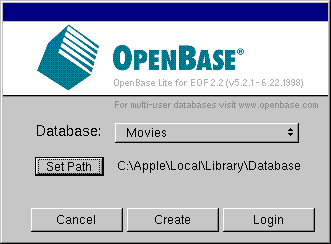
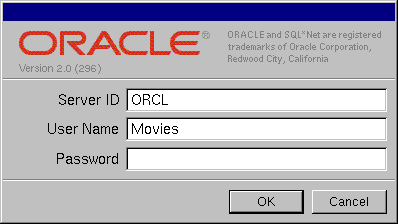
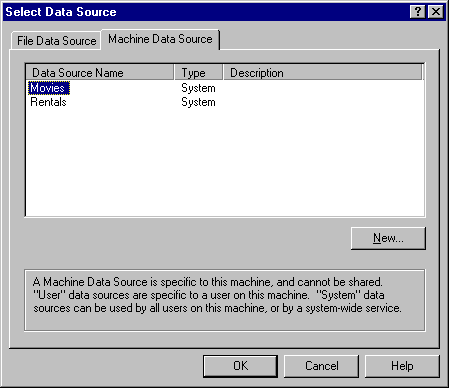

Table of Contents
Table of Contents  Next Section
Table of Contents
Next Section
Table of Contents  Previous Section
Previous Section
A login panel for the selected adaptor opens. Different databases require different login information, so each database's login panel looks different. Shown below are the login panels for the OpenBase Lite, Oracle and ODBC adaptors.



If you are using the preinstalled OpenBase Lite database, click "Set Path", browse to the \Apple\Local\Library\Databases\ directory, and click Open. "Movies" will now appear in the Database pop-up list. Click Login.
If you are not using OpenBase Lite, specify the connection information you provided when you created and populated the Movies database. Post-Installation Instructions provides more information.
Table of Contents Next Section